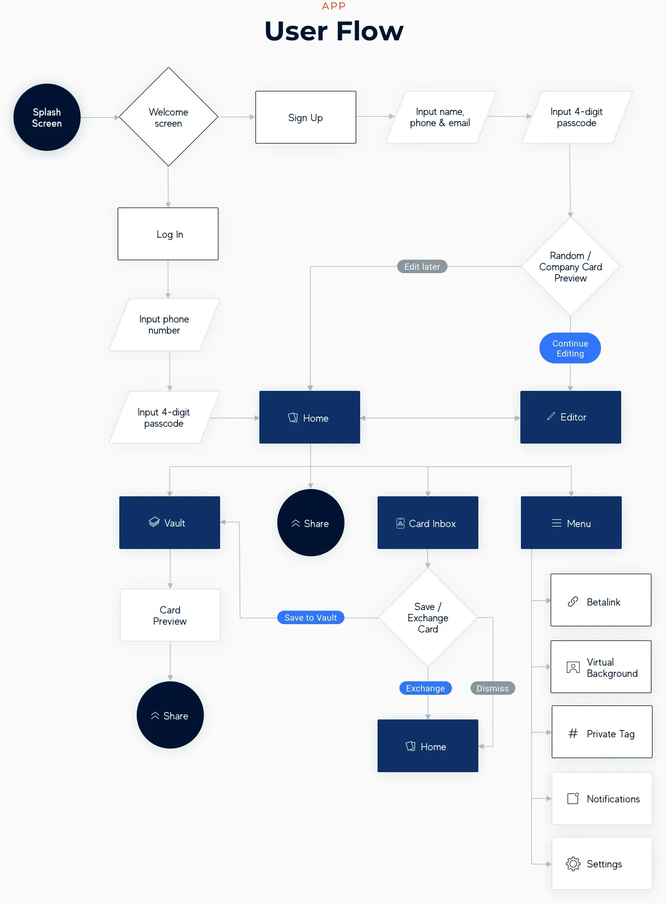
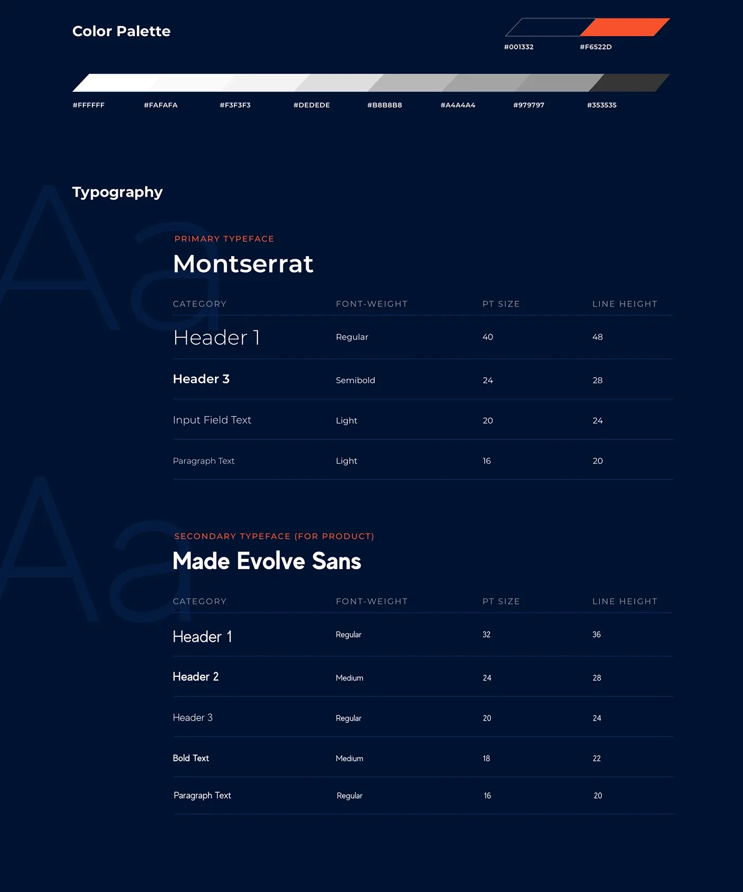
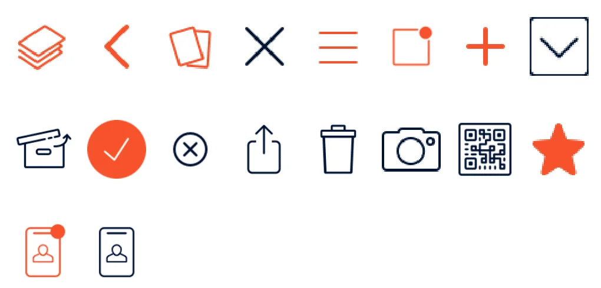
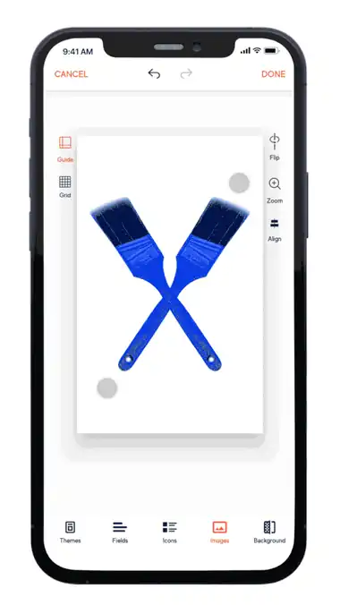
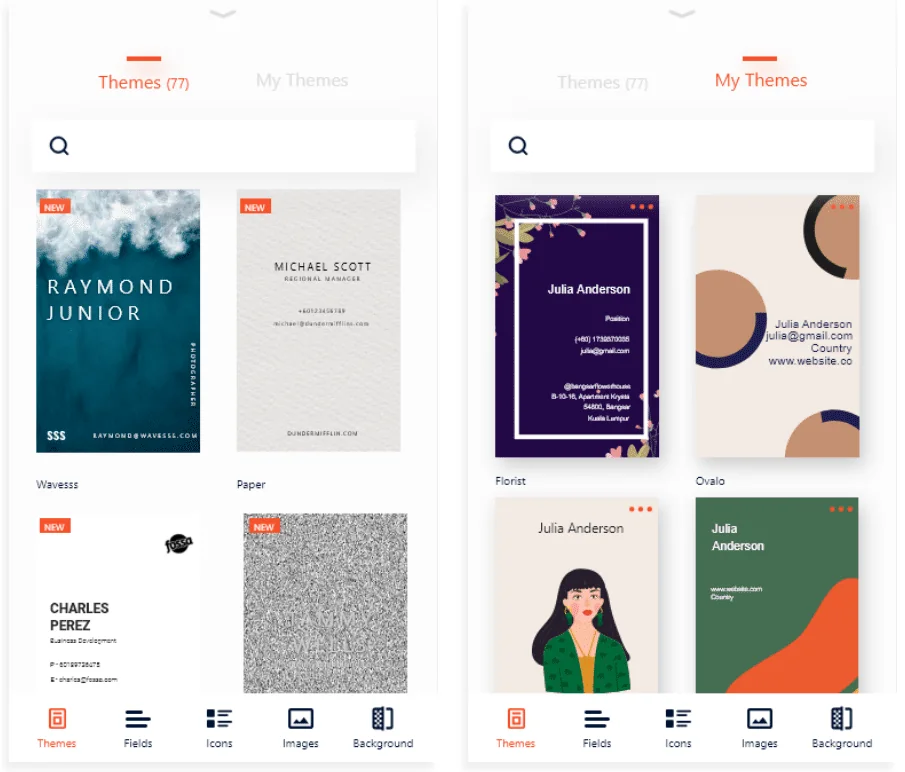
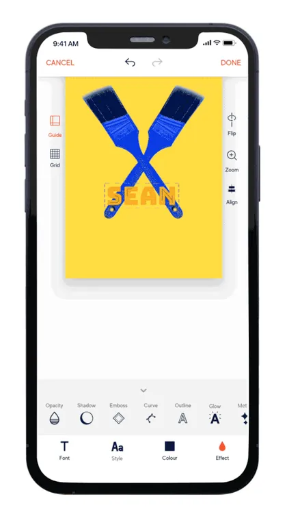
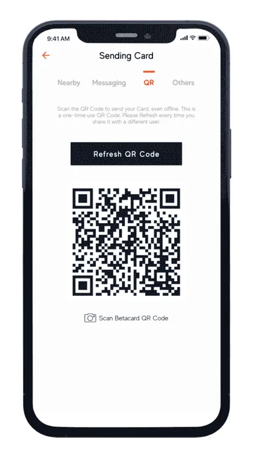
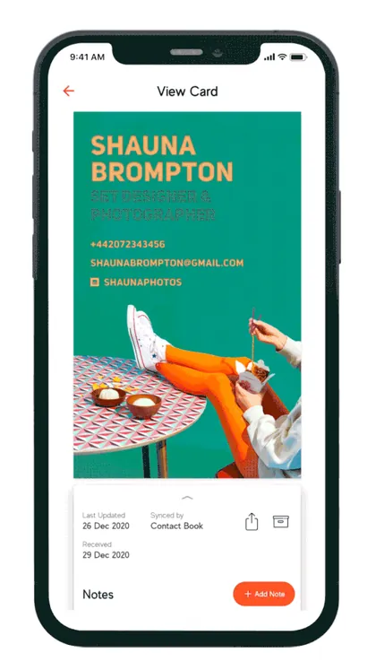
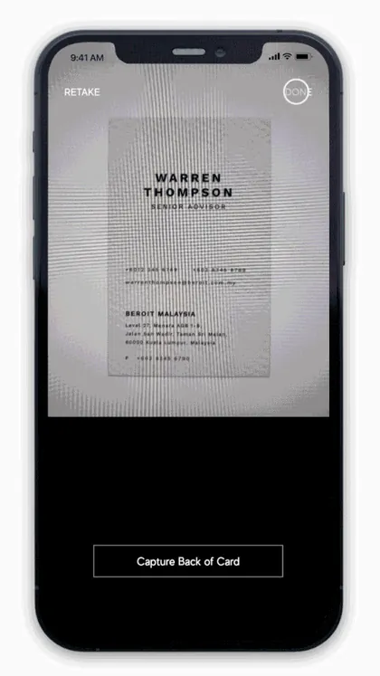

Mapped the path to a first card
From sign-up to a finished card in as few steps as possible, with the option to skip editing and come back later.

case study
Betacard is a contact-card app for people and teams. You design a card, share it by QR, link or nearby, keep your details up to date, and scan paper cards into the app. I was one of two UI/UX designers on the project.
role
I built the design system, designed the card editor and most of the templates, and worked hands-on in Unity to tune how the editor’s effects behave.
problem
From sign-up to a finished card in as few steps as possible, with the option to skip editing and come back later.

One system for the whole product: colours, type scale, icons and components, so every screen and template speaks the same language.


The editor is the heart of the app. I designed how people build a card: choosing a template, adding images and backgrounds, and styling text with effects like shadow, outline and glow. Plenty of freedom, without a wall of options.

The editor runs on Unity. The developers set it up; I went in to tune how each effect behaves, setting the minimum and maximum values so shadows, outlines and glows always look right on a card, then tested it until it matched the design.

Templates give people a good-looking start. I designed most of the set, from bold, image-led cards to clean, minimal ones.





The design system, editor and templates became the core of Betacard: people start from a template and make the card their own in a few taps.